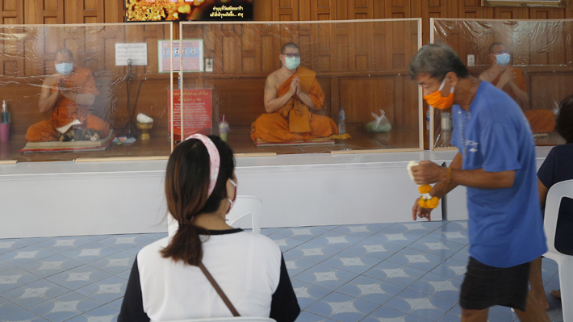

Los sorprendentes números de Tailandia, el primer país que reportó un caso de covid-19 fuera de China
En la nación asiática no se han desbordado los hospitales debido a la pandemia y el Gobierno ni siquiera llegó al extremo de instaurar medidas de confinamiento total, como la gran mayoría del globo.
El 13 de enero pasado una paciente de 61 años de nacionalidad china que había estado en Wuhan –lugar donde se inició el brote epidémico- fue el primer caso de coronavirus detectado en Tailandia y el primer caso del virus registrado fuera de China hasta esa fecha.
Desde el 3 de enero, Tailandia había impuesto medidas de vigilancia para los pasajeros procedentes de Wuhan que ingresaban al país en cuatro de sus aeropuertos más importantes, tras la alarma que se había encendido en China por casos del nuevo virus derivados de un mercado de animales exóticos, según publicó la Fundación IO.
Hoy, Tailandia reporta 2.938 contagiados y 54 fallecidos producto del covid-19, según cifras de la Universidad Johns Hopkins, y se encuentra en el puesto 59° en el número de naciones con más casos positivos, lo que lo deja muy bien posicionado en comparación a las otras grandes naciones asiáticas en su lucha contra el virus.
El país, que tiene 65, 5 millones de habitantes, ha logrado el "control" de la expansión de contagios y reporta una tasa de letalidad del 1,83%, un poco más alta que la de Chile (1,44%), según cálculos de Emol.
Pero ¿qué ha hecho Tailandia para contener el virus e ir en bajada con el número de casos diarios?
Reacción temprana
Se podría decir que después del 22 de marzo, día en el que se registraron más casos nuevos (188), el reporte de contagios diarios ha ido a la baja. Este martes solo se registraron siete nuevos contagios y dos fallecidos, y los números han ido en picada en la última semana: 9 casos nuevos el lunes, 15 el domingo, ninguno el sábado, 68 el viernes, 13 el jueves y 15 el miércoles.
Quizás la diferencia que ha marcado Tailandia con otros países en el combate contra el coronavirus es que esa nación lleva casi cuatro meses imponiendo medidas restrictivas y realizando controles a extranjeros que llegaban de China, por lo que el filtro al momento de entrada al país fue mucho mayor.
La diferencia de Tailandia con China, países europeos y Estados Unidos es que las salas de emergencia en la nación asiática nunca se han desbordado con pacientes con coronavirus y de los 2.938 casos que han dado positivo, 2.609 (88,8%) se han recuperado por lo que solo el 11,2% de los que se han contagiados son "casos activos" actualmente, reportó el Bangkok Post este martes.
No al confinamiento obligatorio
Recién el 24 de marzo pasado el Gobierno tailandés decretó estado de emergencia en el país durante un mes para imponer restricciones y así poder contener los contagios de coronavirus.
En ese momento, el Primer Ministro, Prayuth Chan-ocha, sostuvo en un discurso televisado que no iba a imponer una cuarentena –por el momento- y que las medidas se centrarían en reducir la trasmisión del covid-19 en diferentes áreas. Asimismo, decretó el cierre de los centros comerciales, cines, restaurantes, bares, la cancelación de eventos masivos y restringió la llegada de extranjeros y nacionales procedentes de otros países.
"Algunas requerirán cooperación del público, otras serán órdenes", dijo, al explicar que la decisión de si se aplicaba o no una cuarentena dependería de la cooperación de la gente con el proceso, informó ese día AP.
Luego, el 3 de abril Tailandia impuso un toque de queda nocturno nacional a modo de endurecer las medidas tomadas días antes. El toque de queda que se impuso comienza todos los días desde las 22:00 horas hasta las 04:00 horas, excluyendo a los trabajadores esenciales. En el caso de incumplir la orden, los tailandeses arriesgan multas de hasta 1.215 dólares, dos años de cárcel o ambas.
Según citó EFE el mismo día del anuncio, el Gobierno aseguró mantener "contralada la situación" y rechazó imponer medidas de confinamiento más estrictas. Sin embargo, la vocera de la Oficina del Primer Ministro, Naruemon Pinyosinwat, señaló que se "considera seriamente" ampliar la orden de quedarse en casa a todo el día si los números no dejan de crecer.
Esto, debido a un estudio que reveló el ministro de Salud tailandés, Anutin Charnvirakul: "Hasta ahora, los tailandeses han brindado una cooperación total, pero necesitamos más porque hay un estudio que demuestra que necesitamos tener al menos un 80% de distanciamiento social de nuestra gente para reducir la curva".
Pero, en esos momentos el 70% de los tailandeses había declarado respetar las medidas y hacerle caso al distanciamiento social, según un informe de Bangkok Post , dejando a Tailandia aún por debajo del umbral del 80%.
No bajar la guardia
Observando los casos de vecinos asiáticos como Singapur, que cuando se preparaban para rebajar las medidas tuvieron una segunda ola de casos que triplicó los contagios en una semana, el Gobierno tailandés ha optado por la senda del cuidado y la mesura.
Es por esto que este martes se amplió hasta el 31 de mayo el periodo de emergencia por la pandemia, a pesar del notorio descenso de los números de infectados diarios.
"Hasta ahora, los tailandeses han brindado una cooperación total, pero necesitamos más porque hay un estudio que demuestra que necesitamos tener al menos un 80% de distanciamiento social de nuestra gente para reducir la curva"
"Hasta ahora, los tailandeses han brindado una cooperación total, pero necesitamos más porque hay un estudio que demuestra que necesitamos tener al menos un 80% de distanciamiento social de nuestra gente para reducir la curva"
Según reportó EFE, entre las medidas que seguirán vigentes se encuentra el toque de queda nocturno a nivel nacional y la prohibición de la llegada de vuelos internacionales, a excepción de los vuelos de emergencia, humanitarios y de carga.
A través de cadena nacional, el Mandatario le pidió a la gente que permanezca en sus hogares, a pesar de la inexistencia de una orden de confinamiento obligatoria, y les recomendó evitar los viajes entre provincias durante los días festivos que tendrán en mayo.
Además, recordó que no se permiten las reuniones sociales, y aseguró que el comité de expertos que estudia la evolución de la pandemia en ese país, se encuentra buscando el momento adecuado para comenzar a relajar las restricciones que han mantenido en cierre total la actividad comercial, los parques y los centros de educación.
El vocero del Centro Covid-19, Taweesin Visanuyothin, declaró que se encuentran redactando las directrices para enfrentar la "nueva normalidad" en Tailandia, mientras se evalúa la reapertura gradual del comercio en el país.